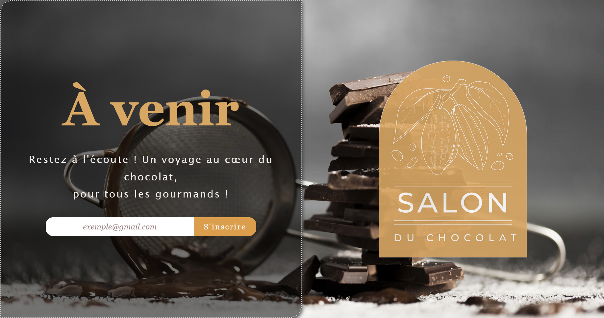
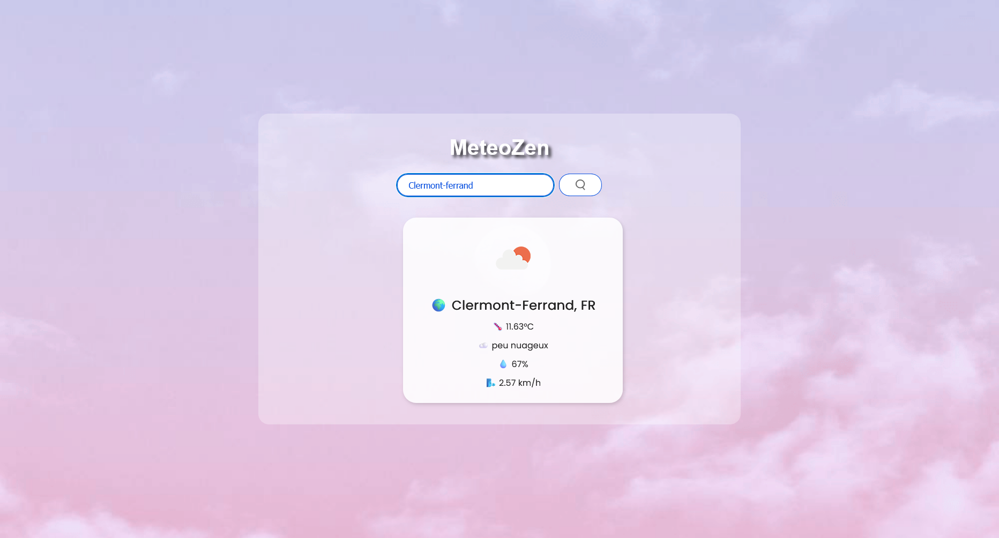
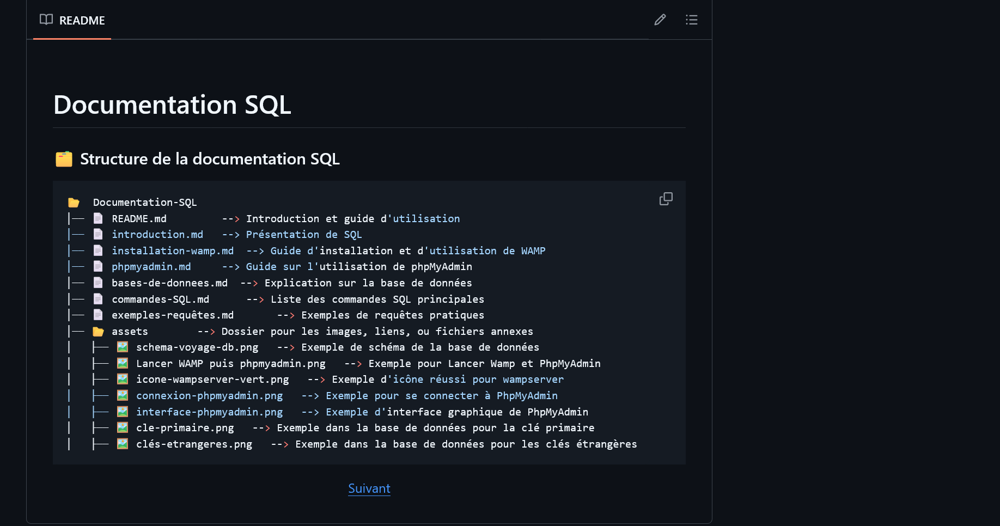

Stage Freelance DWWM | Alexis Delecroix
Stage de 2,5 mois en freelance, réalisation d'une app web et mobile. Finalisation du projet pendant les 2 semaines de vacances en aout. Présentation de projet (échange avec la cliente) ...
Next.js
Html
Prisma (ORM)
module.css
JavaScript
React
Vercel (déploiement)
PostgreSQL (Neon Tech)
Email.JS (côté client) | Resend (côté serveur)
bcrypt.js
JasonWebToken
Postman
Git & GitHub
Notion
Trello
Front-end
- Installer et configurer son environnement de travail en fonction du projet web ou web mobile
- Maquetter des interfaces utilisateur web ou web mobile
- Réaliser des interfaces utilisateur statiques web ou web mobile
- Développer la partie dynamique des interfaces utilisateur web ou web mobile
Back-end
- Mettre en place une base de données relationnelle
- Développer des composants d’accès aux données SQL et NoSQL
- Développer des composants métier côté serveur
- Documenter le déploiement d’une application dynamique web ou web mobile
Du 19 mai au 30 juillet 2025
Mes Projets
Repositories GitHub
Mes réalisations

Portfolio
Mon premier portfolio que j'ai développé en HTML, CSS et un peu de JavaScript. Il présente mes formations et les différents projets réalisés pendant ma formation de développement web & mobile avec Simplon à Clermont-Ferrand.
HTML
CSS
JavaScript
Git & GitHub
×
Portfolio - Détails du projet
Description
J'ai créer mon "premier portfolio" en juillet 2024 en seulement 2 semaines, l'idée m'est venu en
parcourant
le site web "Le Reacteur" et j'avoue que je suis partie d'une des formations gratuites en HTML, CSS et
JavaScript.
Depuis, je le mets à jour pour chacune des technologies et des projets lors de ma formation chez Simplon à
Clermont-Ferrand !
Technologies utilisées
- HTML
- CSS
- JavaScript
- Git & GitHub
Fonctionnalités
- Présentation des projets
- Design responsive
- Apprendre de nouvelles technologies

ComingSoonPage
L’idée, c’est de créer une page qui capte l’attention et qui incite les visiteurs à s’inscrire à la newsletter, tout en assurant une super expérience, surtout sur mobile.SEO : La page doit être bien optimisée pour le référencement. Code clean et Accessibilité !!
HTML
CSS
Git & GitHub

App MétéoZen
Projet d'une application Météo en collaboration. C'est un travail d'équipe en trinôme. Utilisation des technos (sans framework) HTML, CSS et JavaScript. Ajout d'une API
HTML
CSS
JavaScript
API OpenWeatherMap
Git & GitHub

Flanano - Travail en binôme
Créer une application Symfony avec une base de données MySQL, crée une entité Product, affiche les produits dynamiquement grâce à Twig et structure l’application selon l’architecture MVC. Projet d'un catalogue de produits avec gestion admin. C'est un travail d'équipe en binôme (Merci Antonin). Utilisation des technos: Symfony7, Php, Sql etc...
HTML
CSS
JavaScript
PHP & MySQL
Git & GitHub
×


Catalogue de produits - Détails du projet
Description
Créer une application Symfony qui récupère des produits stockés en base de données et les affiche via Twig. Utilisation les entités Doctrine, les contrôleurs Symfony et les templates Twig pour afficher les produits sous forme de liste et de pages détaillées.
Technologies utilisées
- HTML
- CSS
- JavaScript
- PHP
- MySQL
- Algorithmique
- Git & GitHub
Fonctionnalités
- Première version du catalogue en ligne
- Design responsive
- Page dynamique
×


Recette Marmiton
Créer une application Symfony permettant aux utilisateurs de publier, consulter, commenter et liker des recettes de cuisine, avec une interface d'administration et un système d'authentification. Application Symfony avec une base de données MySQL et doit réaliser une première version d'une application en suivant un cachier des charges précis.
HTML, CSS, Javascript
Symfony CLI, Composer, Doctrine ORM
Boostrap5
PHP & MySQL
Git & GitHub
×


Recette Marmiton - Détails du projet
Description
Créer une application Symfony permettant aux utilisateurs de publier, consulter, commenter et liker des recettes de cuisine, avec une interface d'administration et un système d'authentification. Application Symfony avec une base de données MySQL et doit réaliser une première version d'une application en suivant un cachier des charges précis.
Technologies utilisées
- HTML, CSS, JavaScript
- PHP et MySQL
- Symfony CLI
- Composer
- Boostrap 5
- Doctrine ORM
- Git & GitHub
Fonctionnalités
- Version d'une application de recettes marmiton
- Design responsive
- Page dynamique
×


Documenter les bases SQL
En tant que développeur, on doit mettre en place une documentation pour faciliter l'intégration des développeurs juniors. Un travail de groupe en trinôme. C'est à dire concevoir une documentation technique destinée aux nouveaux développeurs, couvrant les bases de SQL. Cette documentation aborde, la création, modification et suppression de tables. Les commandes fondamentales (SELECT, INSERT, UPDATE, DELETE) et l'utilisation de phpMyAdmin.
Documentation SQL
Markdown
format.md (README)
Git & GitHub
Mes Projets


Atelier du bois
Concevoir la page d’accueil et le formulaire de contact pour "L’Atelier du Bois".
Voir le GitHub
×
Atelier du bois - Détails du projet
Description
Projet de développement front-end pour "L'Atelier du Bois", une entreprise d'ébénisterie. Le travail a été réalisé en binôme et consistait à concevoir la page d'accueil ainsi que le formulaire de contact du site web. L'objectif était de créer une interface utilisateur élégante et fonctionnelle mettant en valeur l'artisanat du bois.
Technologies utilisées
- HTML
- CSS
- JavaScript
- PHP
- Git & GitHub
Fonctionnalités
- Page d'accueil responsive
- Formulaire de contact interactif
- Validation des données côté client et serveur
- Design adapté à l'identité visuelle de l'entreprise
Compétences techniques et créatives
Compétences en programmation
HTML
CSS
Visual Studo Code & GitHub
Wordpress
Compétences Créatives
Photoshop
Illustrator
Indesign
Silhouette Studio "Scrapbooking"
Savoir-être
100%
Autonomie
95%
Rigoureuse
100%
Organisée
90%
Curieuse
95%
Travail en équipe
85%
Gestion du temps
90%
Créativité
85%
Calme sous pression
80%
Sens du détail
90%
Adaptabilité
Formations & Certifications
20 Octobre 2025
TP Développeuse Web & Web Mobile
Titre Professionnel de Développeuse Web & Web Mobile | Simplon (63)
Obtention du Titre Professionnel de Développeuse Web & Web Mobile (RNCP) bac +2 équivalent d'un BTS - Octobre 2025
Projet Final "Bien-être & Formations", utilisation de Next.js et +
2024 - 2025
Développement Web & Mobile
Développement Web & Mobile | Simplon (63)
Actuellement en formation chez Simplon du 16 décembre 2024 jusqu'au 09 octobre 2025
Titre Professionnel de Développeuse Web & Web Mobile (RNCP) bac +2 équivalent d'un BTS - Octobre 2025
2024
Prépa-compétence
Prépa-compétence | Afpa de Beaumont (63)
La Prépa Compétences, c'est un programme personnalisé proposé par l'AFPA pour aider les demandeurs d'emploi, notamment ceux ayant un niveau CAP/BEP ou Bac, à se préparer à une formation et à trouver un emploi.
Ce programme permet de :
- Faire le point sur vos compétences et vos objectifs.
- Bénéficier d'un accompagnement personnalisé pour construire votre projet professionnel.
- Développer des compétences clés pour réussir en entretien et trouver un emploi.
2023
Autodidacte et Doubles Casquettes
Autodidacte | +1 an 1/2
OpenClassroom | Cours de Développement Web - Certifications
- Comprendre le web
- Créez votre site web avec HTML5 et CSS3
- Concevez votre site web avec PHP et MySQL
- Gérez votre code avec Git et GitHub
- Créez votre premier site avec WordPress 6
- Créez une maquette web avec Figma
- Apprenez à utiliser la ligne de commande dans le terminal
- Apprenez à programmer avec Javascript
- Mettez en place votre environnement front-end
- Mettez en place votre environnement Python
- Apprenez les bases du langage Python
- Mettez en ligne votre site web
La Créa qui te va | Papéterie Personnalisée
2022
PSE 1
UDSP à Clermont-Ferrand (63)
Le Premier Secour en Equipe de niveau 1 avec l'Union Départementale des Sapeurs-Pompiers du Puy-de-Dôme (UDSP 63) est une formation qui nous prépare à intervenir lors d'un événement nécessitant des secours, en complément des services d'urgence.
2020 - 2022
Brevet National de Sécurité et de Sauvetage Aquatique
BNSSA | 2 ans à Vic-le-comte (63)
Le BNSSA est une formation de 2 ans sans diplôme que j'ai réalisé.
- Technique de sauvetage
- Premiers Secours
- Réglementation
2017 - 2018
Formation Wordpress & Drupal (DBM)
Wordpress & Drupal | DBM à Clermont-Ferrand (63)
- DBM est une agence spécialisée dans le développement de sites web sur mesure avec WordPress et Drupal.
- WordPress et Drupal sont des outils puissants pour créer et gérer des sites web. WordPress et Drupal : c'est un CMS
- WordPress est plus facile à utiliser pour les débutants, tandis que Drupal offre plus de flexibilité pour les projets complexes.
2015
Publication Assistée par Ordinateur en Multimédia
PAO Multimédia | Gréta (63)
PAO Multimédia m'a permis d'acquérir les compétences nécessaires pour créer des visuels percutants et des contenus multimédias de qualité.
- Maîtriser les logiciels de PAO: Photoshop, Illustrator, InDesign
- Créer des visuels attractifs: logos, affiches, brochures
- Mettre en page des documents: rapports, magazines, livres
- Réaliser des animations et des vidéos: motion design, montage vidéo
- Optimiser vos créations pour le web et les réseaux sociaux
2013
Développement Web & Logiciels d'Adobe
Développement Web | Vecteur Formation (63)
Vecteur Formation 63 est un acteur incontournable dans le domaine de la formation professionnelle, offrant des parcours adaptés aux besoins croissants du marché du numérique.
- Les fondamentaux du web: HTML, CSS
- Les frameworks et CMS: WordPress
- Les bases de données: MySQL
- Les logiciels d'adobe : Photoshop, Flash, Dreamweaver
- Le référencement naturel (SEO)
2012
Flockage du centre
Flockage du centre | Stage à vic-le-comte (63)
Flockage du Centre : Plongez au cœur d'un stage créatif à Vic-le-Comte (63) ! Le flockage, une technique qui consiste à appliquer des fibres courtes sur un support pour créer des textures douces et veloutées, est une activité aussi ludique que créative.
- Découvrir une technique originale: Apprenez à appliquer des fibres courtes sur différents supports pour créer des textures douces et veloutées.
- Créer des objets uniques: Personnalisez vos vêtements, accessoires et objets de décoration.
- Développer votre créativité: Laissez libre cours à votre imagination et expérimentez différentes couleurs et motifs.
2005 - 2011
Études et Expériences
2011 | Logistique | Gréta à Issoire (63)
La logistique, c'est l'ensemble des opérations qui permettent de faire circuler les biens et les services, depuis leur production jusqu'à leur consommation finale.
- Organisation et planification
- Sens du service client
- Maîtrise des outils informatiques
2010 - 2011 | École de Gendarmerie | Tulle (19)
Le statut de GAV-EP est une voie d'accès à la Gendarmerie nationale particulièrement adaptée aux profils ayant des compétences spécifiques.
- Traitement des courriers
- Appels téléphoniques
- Gestion des dossiers
2009 | Comptabilité | Gréta à Bourges (18)
- Maîtrise des outils informatiques
- Connaissance de la réglementation comptable
- Rigueur et méthode
2008 - 2005 | BAC PRO Secrétariat & BEP Métier du Secrétariat | Clermont-Ferrand (63)
Lycée Anna Rodier
Expériences
Stage en Freelance DWWM
- Développer la partie front-end d’une application web ou web mobile sécurisée :
- Installer et configurer son environnement de travail en fonction du projet web ou web mobile
- Maquetter des interfaces utilisateur web ou web mobile
- Réaliser des interfaces utilisateur statiques web ou web mobile
- Développer la partie dynamique des interfaces utilisateur web ou web mobile
- Développer la partie back-end d’une application web ou web mobile sécurisée :
- Mettre en place une base de données relationnelle
- Développer des composants d’accès aux données SQL et NoSQL
- Développer des composants métier côté serveur
- Documenter le déploiement d’une application dynamique web ou web mobile
Du 19 mai au 30 juillet 2025
Porteur de projet : AirNAM | Équipe Rouge
- Thématique : Éco-conception & Accessibilité
- Création d'un site WordPress écoresponsable autour de la qualité de l'air dans les transports
- Conception d'un prototype fonctionnel, au design réfléchi et optimisé pour le SEO et la performance
- Compétences mobilisées : leadership, travail d'équipe, coordination, organisation, créativité, gestion du temps
Du 23 au 25 Avril 2025
- Prise de note,
- Traitement administratif,
- Dactylographie,
- Mise à jour d'une base de donnée.
- Organiser,
- Animer des ateliers,
- Gestion des ventes à domicile,
- Travail d'équipe.
- Participer à un inventaire,
- Ranger des produits selon leurs dates de validité,
- Contrôler l'état des stocks.
- Renseigner le public,
- Rédiger des rapports,
- Identifiter les appels téléphoniques.
- Renseigner le public,
- Rédiger des rapports,
- Identifiter les appels téléphoniques.
Centres d'intérêt
sous-marine